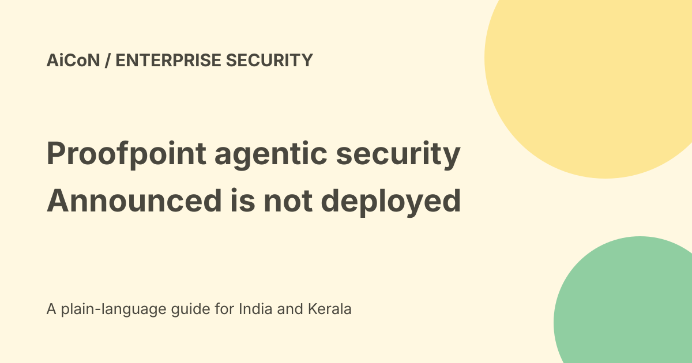

Proofpoint agentic security: announced features and availability
Proofpoint announced an Agentic Data and AI Security system at Protect 2026. The official 22 September release says its new capabilities, Semantic Business Policies and Agentic Insights are expected by year-end 2026. That is a future availability statement, not proof they are already deployed in every customer account.

What is being joined?
The release describes one view of data sensitivity, identity, access, behaviour and intent through the Proofpoint Knowledge Graph. It aims to assess both what an agent is doing and which data it can reach.
This is the vendor's design description. A common graph does not automatically prove every system is integrated, every permission is correct or every sensitive action is blocked.
Three announced agents
Zero-Touch Detection is described as surfacing significant actions. Instant Investigation is described as reconstructing what happened across data, identity and behaviour. Protection Optimization is described as turning that context into remediation with a human in the loop.
Detection, investigation and remediation are different stages. Ask which one is actually available in your deployment and what happens before a consequential change.
Semantic Business Policies
The official blog describes turning plain-language business rules into runtime controls. Its examples include limits on outgoing payments, gambling sites or external communications.
A natural-language rule can be ambiguous. Teams should inspect the generated policy and test both permitted and denied actions. Do not assume a short English sentence expresses every exception or approval chain.
Intent-based controls
The blog describes Intent-Based Access Control measuring an action against the organisation's rules. It separates authorised business work from actions that deviate from that purpose.
A product claim about intent checking is not proof that a system understands every instruction or catches every prompt injection. Coverage, decision logs and false positives need testing.
Availability is the key correction
The press release says the capabilities are expected to be available by year-end 2026. The blog uses introducing language, but that does not override the release's explicit future timing.
Contact the vendor to confirm the exact module, release, plan and region before planning a rollout. We did not inspect a customer account or obtain a general-availability notice.
First-vendor and speed claims
The announcement's first-unified-system wording and investigation-time comparisons are company claims. We did not perform an independent market survey or timing benchmark.
The archive's survey percentages are not needed to prove the product works. Survey responses about adoption or confidence are different from measured detection performance.
A practical enterprise evaluation
- Inventory your agents, data and service identities.
- Confirm exact module availability and licensing.
- Check supported systems and deployment permissions.
- Define a narrow business policy with its exceptions.
- Inspect the technical rule generated from it.
- Test harmless allowed and denied actions.
- Review logs, false positives and human approvals.
- Test rollback and failure behaviour.
- Review contract, data residency and total cost.
Free, paid and India scope
This is enterprise security software, not a verified free personal tool. No public final INR quote, Indian hosting commitment or universal trial was established in the sources checked.
No endpoint was connected, policy enforced or security event simulated here. A release announcement should not be treated as an audit result or a guarantee against every agent-driven incident.
What changed since the original post?
We add the explicit expected year-end availability, separate the three control stages and keep marketing rankings and speed claims attributed. The guide does not imply that announced controls are already generally available.
Frequently asked questions
Can I assume the new features are live now?
No. The official release gives an expected year-end 2026 date.
Does a plain-language policy need testing?
Yes. Inspect the generated control and actual behaviour.
Was enforcement tested?
No.
Sources: Official system announcement and availability · Official semantic-policy and agentic-insights explanation. Checked 7 October 2026.